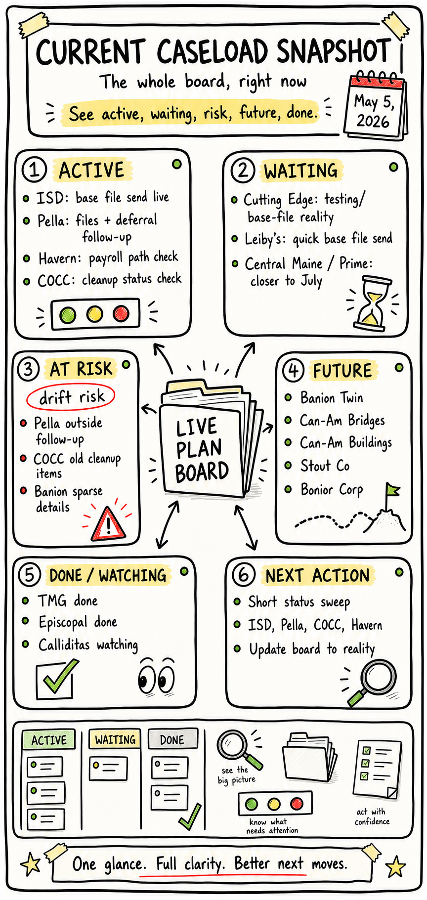
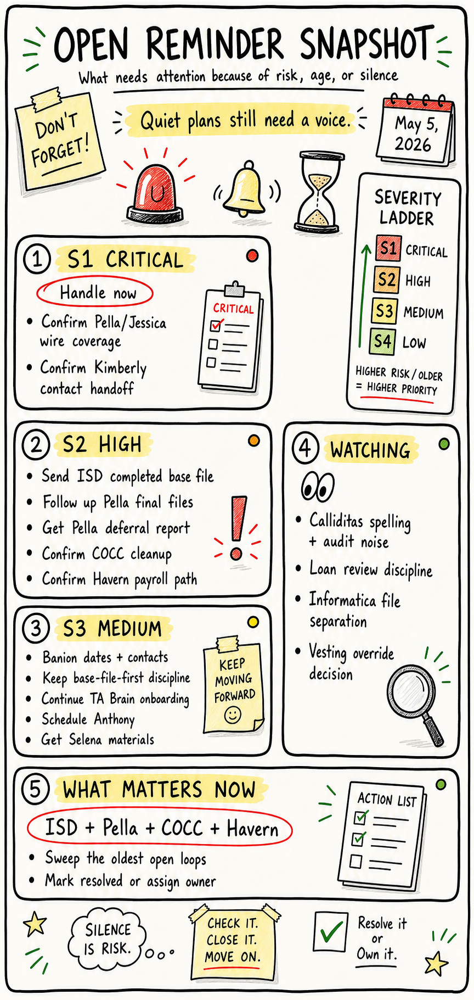
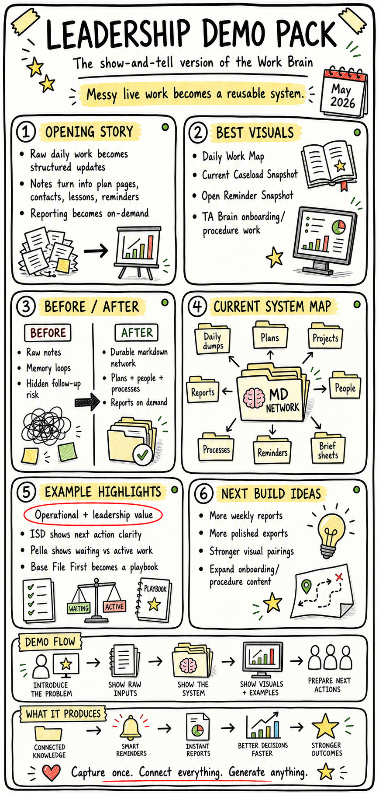
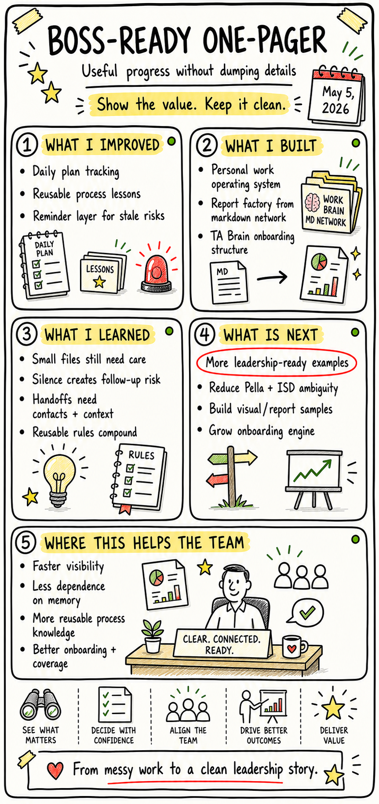
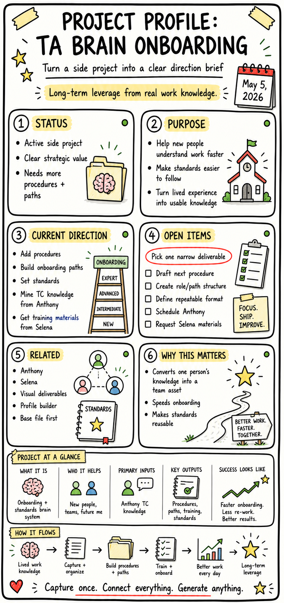
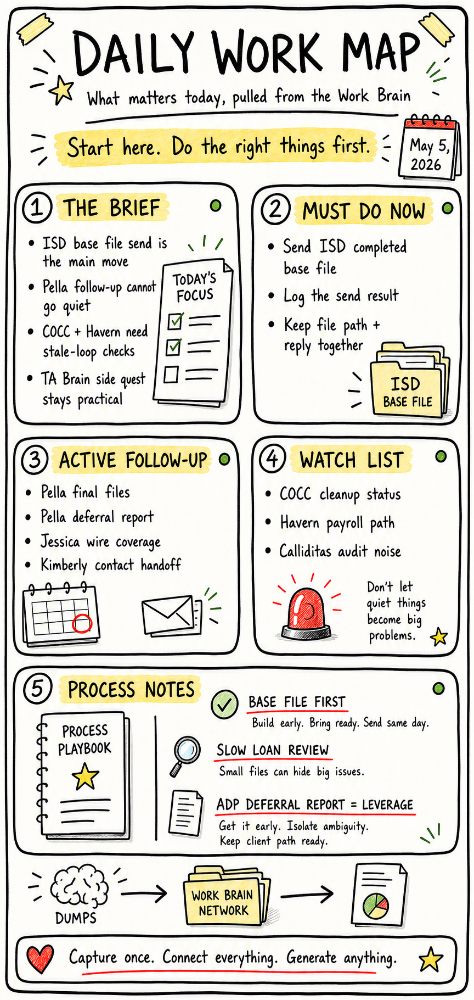
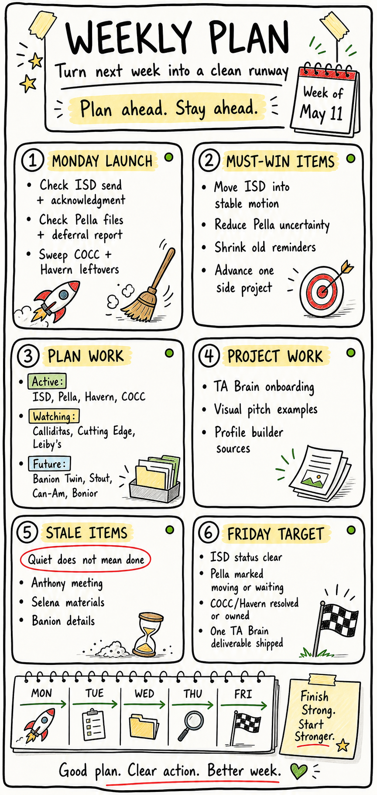
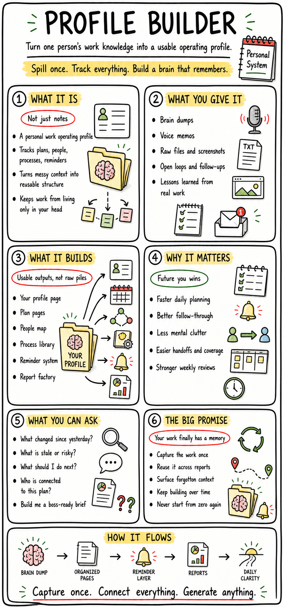

A deck about the pressure, the craft, the wins, the dips, and the weirdly powerful instinct to turn messy work into systems that other people can actually use.
SystemsPressureCuriosityVisuals
High pressureBuild frontClarity zone
Built from real context
02 / 14
The operating pattern
You do not just want to get work done. You want the work to teach the system.
That is the signal underneath the TA Brain, Joel's Work Brain, daily rundowns, visual reports, reminder ledgers, and automation experiments. You keep building a second brain around the work so the next version is less dependent on memory and more dependent on structure.
01Capture the mess
02Find the pattern
03Turn it into a tool
03 / 14
Current snapshot
The work has two engines.
One engine handles real conversion pressure: plans, wires, files, cleanup, people, dates, and blockers. The other engine turns that work into reusable knowledge, visuals, and automation.

Operational load

Risk radar

Show-the-work layer
04 / 14
Strength profile
Your unfair advantage is translation.
You can move between messy human context, operational detail, visual explanation, and repeatable tooling. That combination is rare because most people pick one lane and stay there.
Pattern Finder
You notice the repeatable move hiding inside a one-off problem.
Visual Operator
You care whether a thing can be understood at a glance, not just whether it exists.
Pressure Handler
You keep moving while plans, people, dates, files, and exceptions pull in different directions.
System Builder
You build ledgers, guides, dashboards, reports, and automations so future work has rails.
05 / 14
The ups
The high points are not just outputs. They are compounding moves.
TA Brain
You turned lived conversion knowledge into a growing institutional knowledge base with roles, processes, entities, onboarding paths, and visual procedure layers.
Work Brain
You created a personal operating system for plans, projects, people, processes, reminders, reports, and daily dumps.
Report Factory
You pushed past plain notes into daily briefs, snapshots, boss-ready one-pagers, image outputs, and leadership demo packs.
Automation
You are wiring voice/text capture, Gmail/Drive intake, daily summaries, exports, and reminders into a lower-friction workflow.
06 / 14
The downs
The hard part is not ability. It is carrying too many open loops at once.
The pattern I see: the work can become heavy when everything is alive at the same time: client plans, urgent cleanup, side projects, automation tests, training material, people follow-ups, and the wish to make all of it elegant.
Silence becomes risk because follow-ups disappear unless the system surfaces them.
Resolved issues can keep haunting the list unless the record is aggressively cleaned.
Side projects compete with active plan pressure unless they get their own lane.
The bar for visual quality can make early versions feel unsatisfying until the layout really changes.
07 / 14
Recovery loop
Your comeback pattern is operational: capture, sort, clarify, ship.
08 / 14
Achievement wall
Stuff that actually exists now.
A 122-page TA Brain wiki with roles, processes, concepts, entities, sources, and onboarding structure.
A personal Work Brain with a durable object model and report factory.
Visual deliverables, pitch decks, procedure pages, animations, and standalone HTML tools.
Automation paths for daily summaries, brain dump intake, email movement, and balance-query export ideas.

Boss-ready one-pager

TA Brain onboarding program
09 / 14
Work style
You are at your best when the work surface is alive.
Static docs are useful, but you seem to light up when information becomes something you can move through: a deck, a map, a flow, a prototype, a one-pager, a tool, a wiki that behaves like a network.

Map the day

Plan the week

Build the profile
10 / 14
Pressure map
The danger zone is half-cleaned work.
Your notes repeatedly show that the scary part is not the big obvious deadline. It is the almost-done thing: duplicate refs, missing fund links, stale follow-ups, unresolved file paths, quiet contacts, and tasks that look handled but still have one hidden hook.
11 / 14
People pattern
You treat people as part of the system, not as footnotes.
The Work Brain keeps contacts, asks, ownership, mention history, and relationship context because execution is rarely just a task list. It is a network of who knows what, who can unblock what, and who needs the clean handoff.
12 / 14
Useful honesty
The same strengths have sharp edges.
High standards
Great for quality. Risky when a useful first pass gets judged like a final artifact.
Many live systems
Great for compounding. Risky when each tool creates another maintenance surface.
Big visual taste
Great for leadership buy-in. Risky when polish starts competing with operational clarity.
Fast pattern jumps
Great for invention. Risky when a page, file, or automation needs boring exactness.
The fix is already in your system: clear lanes, severity, status, reminders, resolved sections, and small repeatable outputs.
13 / 14
What comes next
The next level is not more notes. It is an operating layer.
The obvious future is a loop where daily capture feeds the Work Brain, the Work Brain feeds reports, reports feed decisions, and the best decisions feed reusable TA Brain procedures.
14 / 14
The read
You are building proof that the messy middle can become a map.
That is the through-line: not perfection, not fake calm, not pretending the downs are not real. The win is that you keep converting pressure into structure, structure into visuals, and visuals into tools people can actually understand.
Keep capturingKeep clearingKeep shippingKeep making it visible